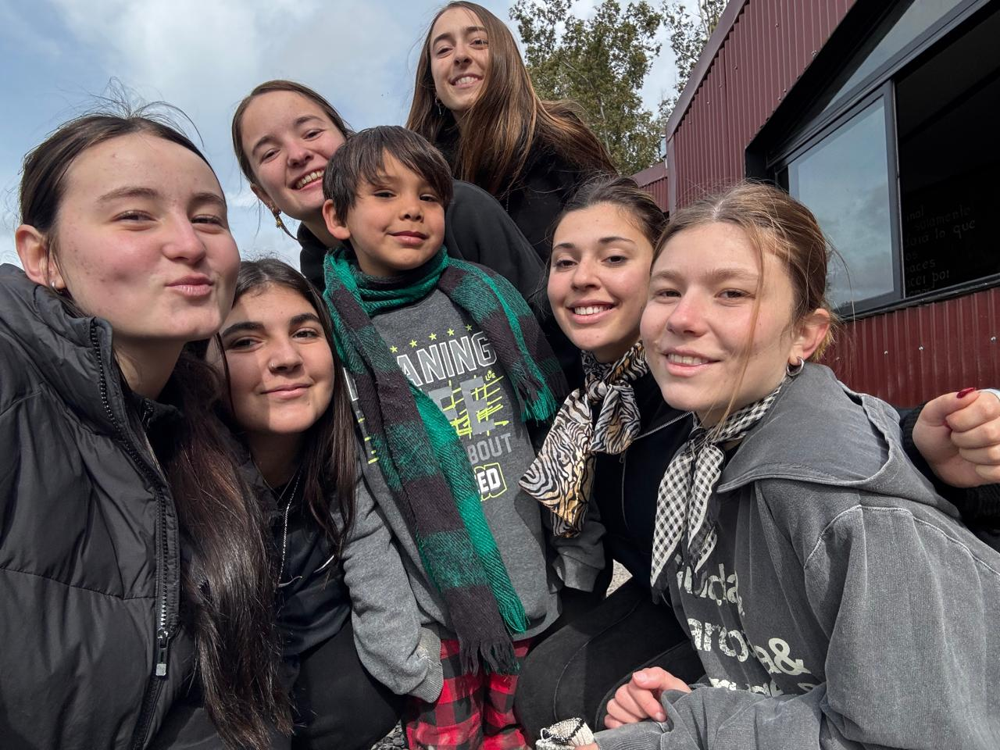

Otra habilidad que tengo es la empatía y la perspectiva global, porque intento entender las realidades de otras personas y entender que no todos vivimos las mismas situaciones ni tenemos las mismas oportunidades. Creo que es importante poder ponerse en el lugar del otro, escuchar sin juzgar y ser consciente de las necesidades de quienes nos rodean. También considero que conocer otras realidades nos ayuda a valorar más lo que tenemos y a entender que, aunque nuestras experiencias sean diferentes, todos merecemos respeto y oportunidades. Esto resume lo que fue Villaguay, mesa digna y akamasoa.
Volver a las habilidades© 2026 - Mi Portfolio